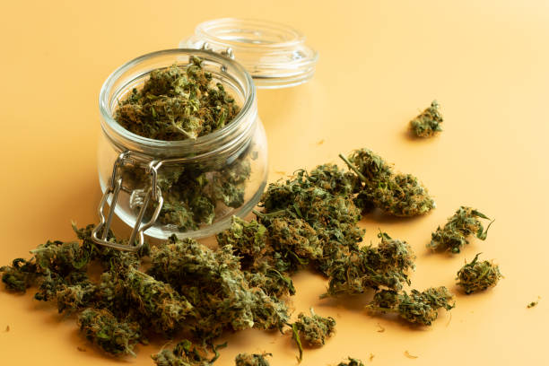
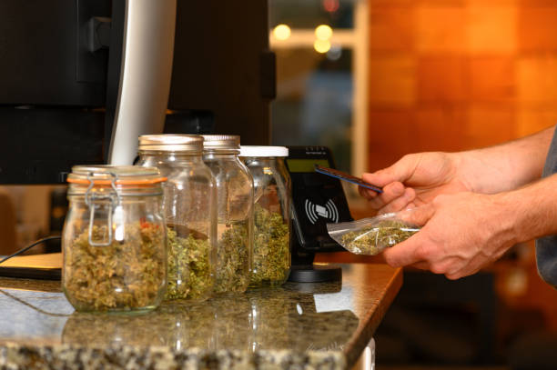
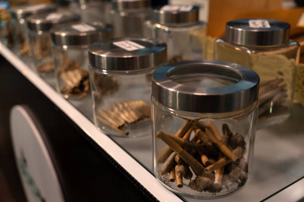

What is the current status of cannabis research studies in Florida?
As of now, cannabis research studies in Florida are steadily growing and expanding.. With the legalization of medical marijuana in 2016, there has been a surge of interest and funding in researching the potential benefits and risks associated with cannabis use.
Numerous universities and research institutions in Florida have begun conducting studies on various aspects of cannabis, including its effects on different medical conditions such as chronic pain, epilepsy, PTSD, and cancer.
Posted by on 2024-06-18
What is the impact of cannabis legalization on research in Florida?
The legalization of cannabis in Florida has had a significant impact on research in the state.. With the passing of Amendment 2 in 2016, which legalized medical marijuana for qualifying patients, there has been a surge in interest and investment in cannabis research.
One of the most notable effects of legalization on research is the increase in funding opportunities.
Posted by on 2024-06-18
What is the focus of ongoing cannabis studies in Florida?

Cannabis studies in Florida are currently focused on a variety of key areas, reflecting the growing interest and investment in this field.. One of the main focuses is on the medical benefits of cannabis, particularly in relation to treating various health conditions such as chronic pain, epilepsy, PTSD, and cancer.
Researchers are conducting clinical trials to investigate how different strains and compounds within cannabis can be used to alleviate symptoms and improve quality of life for patients.
Posted by on 2024-06-18
What is the potential for medical breakthroughs from cannabis research in Florida?
The potential for medical breakthroughs from cannabis research in Florida is truly promising.. With the increasing legalization of medical marijuana in the state, researchers are now able to conduct more in-depth studies on the therapeutic benefits of cannabis.
One of the most exciting aspects of cannabis research in Florida is its potential to revolutionize the treatment of various medical conditions.
Posted by on 2024-06-18
What is the relationship between state regulations and cannabis research in Florida?
In Florida, the relationship between state regulations and cannabis research is a complex and ever-evolving one.. As with many states in the US, Florida has been grappling with the issue of cannabis legalization for both medical and recreational purposes.
Posted by on 2024-06-18
How to Participate in Cutting-Edge Florida Cannabis Research Studies
If you're interested in being a part of cutting-edge cannabis research studies in Florida, there are several steps you can take to participate.. These studies offer an opportunity to contribute to the growing body of knowledge about the potential benefits and risks of cannabis use, as well as help shape future policies and regulations.
One way to get involved in cannabis research studies is to keep an eye out for recruitment opportunities.
Posted by on 2024-06-18
Discover the Latest Breakthroughs in Cannabis Research in Florida
As the landscape of cannabis research continues to evolve, Florida has emerged as a key player in uncovering the latest breakthroughs in this rapidly expanding field.. With its progressive approach to medical marijuana legalization and robust scientific community, the Sunshine State is at the forefront of exploring the potential benefits and applications of cannabis.
One of the most exciting developments in cannabis research in Florida is the exploration of its therapeutic properties.
Posted by on 2024-06-18
Uncover the Secrets of Cannabis with Florida's Leading Research Studies
Cannabis, also known as marijuana, has long been a topic of controversy and debate.. While some view it as a harmful drug with negative effects on the mind and body, others see it as a natural remedy for various ailments.
Posted by on 2024-06-18